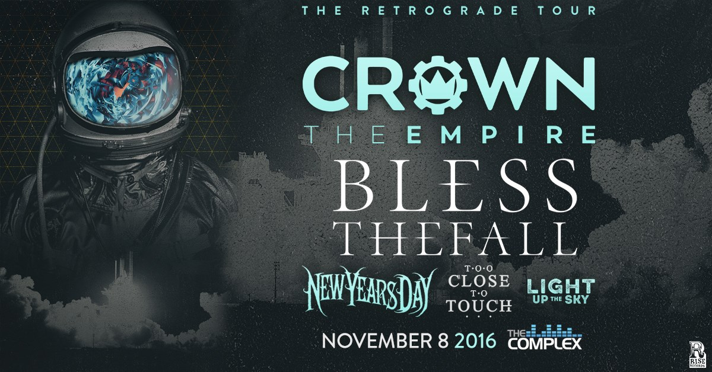

Crown The Empire

The Complex Presents
CROWN THE EMPIRE
The Retrograde Tour
With Special guests
Blessthefall
New Years Day
Light Up The Sky
Too Close To Touch
Doors: 6:00 PM
Tickets On Sale 8/12/16 10:00 AM
All Smith's Tix Outlets
All Graywhale Stores
The Complex Box Office
http://crowntheempire.net/
Since bursting onto the scene in 2011 with their debut EP, “Limitless”, Crown The Empire have shown no signs of slowing down. 2012 brought the band to the forefront with their debut full-length, “The Fallout”, and a cocktail of world tours, magazine covers, and die hard fan dedication ensued, pushing ‘The Fallout’ to sell over 85,000 copies to date. Their sophomore follow up ‘The Resistance: Rise of the Runaways’ further explored the conceptual world within their previous release, and was greeted with even more enthusiasm, reflected in the 75,000 copies sold in half the time of their previous effort.
In 2016, Crown The Empire released their new album ‘Retrograde’. This record sees a departure from the conceptual world that defined their past efforts, and instead the band takes you on a voyage into the reality of their lives as a band of twenty-something’s growing up under a spotlight, and the way they see the world around them. Bathed in cinematic production reminiscent of the space epics ‘Interstellar’ or ‘2001: A Space Odyssey’, combined with blistering guitar riffs comparable to the likes of ‘Incubus’ or other alt-rockers of a time gone by, Crown The Empire have made their identity known with Retrograde, proving they have the song-writing prowess backed by an understanding and aptitude for cultural identity that has them ready to stand amongst the giants.
There is nothing fake about Retrograde. The 13 song LP blends seamlessly from track to track, allowing fans to truly embrace Crown The Empire as a soundtrack to their lives in an unparalleled way. Nothing is holding Crown back from being one of the biggest bands in rock, and ‘Retrograde’ marks only the beginning of what will be a cultural impact the world over.